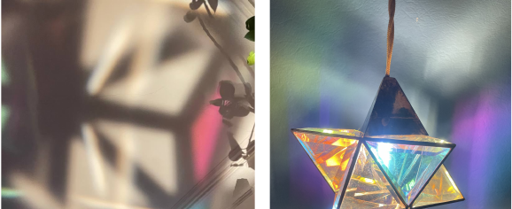
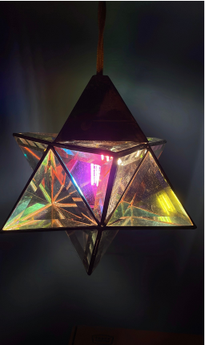
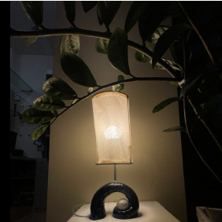
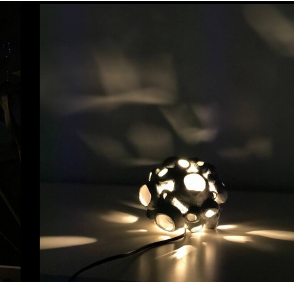
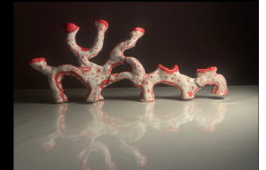
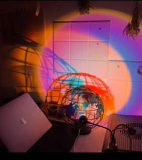
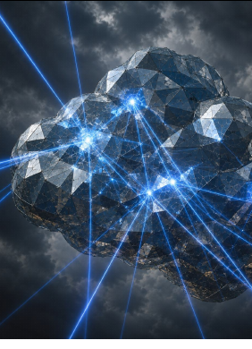
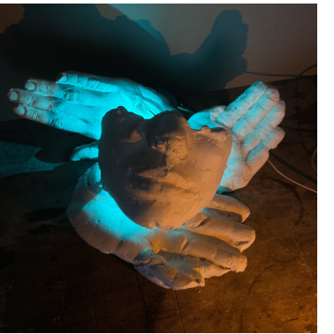
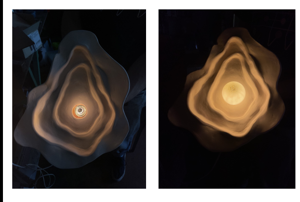

Объекты
света
Девять учебных экспериментов с преломлением, рассеиванием, цветом, отражением, материалом и формой.
- Роль
- Исследование / прототипирование
- Статус
- Серия объектов
- Автор
- Оксана Никитина

О проекте
Девять учебных экспериментов с преломлением, рассеиванием, цветом, отражением, материалом и формой.
Серия показывает свет не как оформление, а как физический материал. Каждый объект изолирует один принцип и проверяет, как он влияет на образ, поверхность и окружающее пространство.







